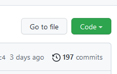
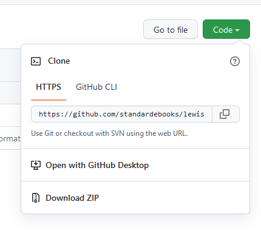
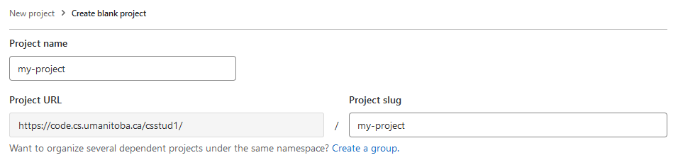
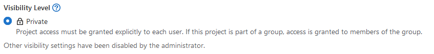
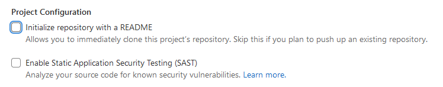
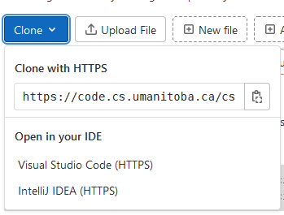
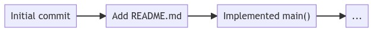

We’re not the first people to initialize repositories and use version
control. In fact, vast online repositories of different projects exist
on sites like GitHub, GitLab, SourceHut, and more.
Cloning an existing repository from a website is straightforward
using the git clone subcommand.
Let’s clone a specific repository. The specific repository contains
the source code that you downloaded on the command-line last week (the
hello project).
Start by opening your terminal and connecting to Aviary, then
run:
git is going to start connecting to a remote web server
that’s hosting some source code in a git repository, and
you should see output that looks similar to the following:
There’s a lot of output here that (honestly) isn’t that important in
terms of being able to use git for tracking changes to your
files.
Just like when you created your own git repository last
week, the folder hello now contains another repository.
This repository contains the code that you downloaded last week as a
zip file!
Finding a repository’s
address
Similar to connecting to a remote computer, we have to tell
git where to find the repository by giving it an address or
location. In the example above, I provided you with the complete command
to clone the repository, but sometimes you’ll find a repository that
you’re interested in cloning (including your own!).
Standard Ebooks is a web
site that’s curated and published many free, high quality public domain
e-books.
The team at Standard Ebooks use GitHub extensively to collaborate and
track changes to the files that are used in the creation of their
e-books. You can find a collection of their repositories on GitHub
here:
https://github.com/standardebooks
Scroll down a little bit to the “Repositories” section and pick an
e-book. The titles (unfortunately) are pretty messy here, but they are
readable (if you can’t pick an e-book, I’ll pick one for you: The
Life and Adventures of Robinson Crusoe).
Once you click on a link to an e-book, you’ll be taken to the main
page on GitHub for that repository. The main table in the center of the
page is a listing of the files and folders that are in that repository.
Just above and to the right of that table is a green button labelled
“Code”:

The green “Code” button in
question.
Click the green “Code” button, then you can copy the text under
“HTTPS”, this is the address of the repository that you’re going to use
to tell git where it should look when it’s cloning the
repository.

The location of the repository that you
can copy.
Now you can paste this link into your terminal as part of a
git clone command:
Cloning existing repositories is something that you will do
sometimes, but not actually that often. The times when you will
will want to clone existing repositories are either:
You’ve previously created a remote repository and you want to clone
it into a new location, or
You’re downloading someone’s software for the purpose of compiling
it and using it.
Let’s make our own new remote repository. Creating a new remote
repository is different from initializing a repository on the command
line with git init, but they are related to one
another.
When you initialize a new repository on the command line,
git is creating that .git directory that’s
filled with all the stuff
git needs to keep track of changes to your files. When
you create a new remote repository, you’re really creating a well-known
other place (that’s not on your computer or on Aviary) where you can
duplicate and manage your files.
We’re going to be doing this not with GitHub, but with a free,
open-source, and self-hostable product called GitLab. The U of M CS Department
hosts an instance of GitLab (there’s a web site you can go to that’s
dedicated for students taking COMP courses at the U of M) at
https://code.cs.umanitoba.ca
Open that link, then we’re going to go through a few things to create
a new repository.
Sign up for GitLab
Before we can do anything with this instance of GitLab,
you’re going to need to sign up for a new account. You can skip this
step if you’ve previously signed up for a GitLab account here.
On the log in
page, click on the “Register now” link, it’s just below the big blue
“Sign in” button.
When you sign up, you can enter whatever you want for your “First
name”, “Last name”, and “Username” (this is not audited by our tech
staff), but you must use your
@myumanitoba.ca e-mail address, no other e-mail addresses
are permitted to sign up.
The account you’re creating here is not at all connected to your
account on Aviary, you don’t (and shouldn’t) use the same password for
both of these systems.
This is a real aside: consider starting to use a password
manager to generate and securely store your passwords. I can
personally recommend KeePassXC, but
some people like 1password. Others
prefer to manage their passwords on the command line and can use tools
like pass.
Main advice: don’t use the same password for everything; don’t write
your password on your hand.
Just after you sign up, GitLab will ask you what you think your
“role” should be. Ultimately this is helping GitLab decide how it should
organize itself in terms of what you see when you first log in. I would
suggest that you choose “Software Developer” here.
Congrats! You just signed up for a version control repository
service! 🎉
Create a new repository
Now we get to the part that we’re really interested in: actually
creating a remote repository to upload our code to.
Just after you finish creating your account, and each time you log in
to GitLab, you’re going to be at your
dashboard.
The GitLab dashboard.
Click on “Create a project”. There are several options you can choose
from to create a project, but for now you should click on “Create blank
project”. Ultimately our goal is to copy an existing repository to this
remote repository.
Now you get to be creative by picking a project name. The project
name that you enter here will become part of the project’s URL (the
address or location of the repository). If you’re following along with
the examples from last week, you should pick something like
my-project. If you want to start putting your course
documents into this repository (like you might in an assignment), you
should pick something like a course name (e.g.,
SCI2000).

Selecting a project name.
The only option you have for visibility is “Private”, and you should
leave it that way.

Project visibility level (you can only
choose Private).
Some repository hosting software (like GitHub) provide the (default)
option to have public repositories. While public repositories are
important, in circumstances where you’re planning to put your course
documents into the repository (which you should be!), you don’t want to
risk having your course documents being publicly available and
accessible. In short: avoid academic misconduct situations by keeping
your repository private.
You’ll also see some options for project configuration. You should
deselect everything for your first repository; we’re
eventually going to be uploading an existing repository to this remote
repository, and we don’t want any file conflicts.

Project configuration
options.
Finally, click the “Create project” button. If everything’s worked
out, you should see a new (and empty) project page:
A fresh, new, empty project.
You just created a new remote repository! 🎉
Pushing to a remote
repository
Right, that repository is there, but it’s… empty.
Our goal now is to take an existing repository and “push” the
repository’s contents to our new empty remote repository.
Open your terminal, connect to Aviary, and navigate to the folder
that contains a git repository (one of the ones you created
last week). Alternatively, create a new folder and initialize an
entirely new repository, and add and commit
some files to that repository. All of the examples below this section
assume that your present working directory (pwd) is a Git
repository and contains a .git folder.
Configuring your repository
Before you can push to a remote repository, you have to tell Git
where it’s supposed to push to by configuring your repository. This is a
one-time set up, you only need to do this once per
repository.
You can configure the remote repository in Git using the
git remote subcommand:
Starting from a repository (your present working directory should be
one that has a .git directory), we first need to tell
gitwhere we want to push our code to, this is
going to be the remote repository’s address. We’ll do this using the
git remote command:
You can get location or address of the repository in GitLab in any of
the following ways:
Copy and paste the address from your web browser,
Find the address in the instructions GitLab shows you for setting
up your repository, or
Click on the blue “Clone” button in GitLab and copy the address
from there.

The blue “Clone” button in
GitLab
When you run this command with your own repository’s address,
git shouldn’t print any output, and you’re ready to push
your repository to the remote!
Pushing to the remote
repository
Now that your repository has a remote, we want to push all the
commits that you’ve made (and thus all the files) to the remote
repository. Pushing to the remote repository is something that you
should do often, our goal is to make sure that the local repository you
have is approximately synchronized with the remote repository on the
server.
You can push all commits to the remote repository using the
git push subcommand:
The first time you push to the remote repository, you have to tell
Git which “branch” goes to the remote (more on branches below):
git push -u origin main
Any subsequent time you want to synchronize your local repository
with the remote repository, you just need to run:
git push
Regardless of which one you’re running here, git is
going to ask you to enter a username and password. The username and
password that you enter here are the ones that you chose when you signed
up for your GitLab account at https://code.cs.umanitoba.ca.
You should see output similar to the following:
[you@bird my-project]> git push -u origin main
Username for 'https://code.cs.umanitoba.ca': you@myumanitoba.ca
Password for 'https://you@mumanitoba.ca@code.cs.umanitoba.ca':
Enumerating objects: 3, done.
Counting objects: 100% (3/3), done.
Writing objects: 100% (3/3), 225 bytes | 225.00 KiB/s, done.
Total 3 (delta 0), reused 0 (delta 0), pack-reused 0
To https://code.cs.umanitoba.ca/csstud1/my-project.git
* [new branch] main -> main
Branch 'main' set up to track remote branch 'main' from 'origin'.
Now refresh your browser window that has the remote repository, and
you should see some files! 🎉
Branches
So far we’ve been using the basic features of Git to track changes to
files that we have in a repository. We can visualize these changes as a
linear list:

A linear sequence of
commits.
We can literally see this if we use the git log
subcommand, and we can also get back to previous commits using the
git checkout subcommand.
Take a look at the commit history from one of your own
repositories:
[you@bird my-project]> git logcommit 3d7739db044efa992bbfdb2d613a0fc025f39d71 (HEAD-> main, origin/main)Author: Franklin Bristow <fbristow@cs.umanitoba.ca>Date: Mon Sep 26 14:07:53 2022 -0500Updating TODO.commit 943ae855084a66fbdee8b7469f81be284e04cf65Author: Franklin Bristow <fbristow@cs.umanitoba.ca>Date: Mon Sep 26 13:58:54 2022 -0500Writing more about version control.Looking back at log messages is cool, so let's use `git log` to see them.
Those long numbers that you see after the word “commit” are unique
identifiers for that commit. You can get back to the state that your
project was in at that state by using the git checkout
command:
[you@bird my-project]> git checkout 3d7739
You can either copy and paste the complete commit ID, or you can use
the first 7 or 8 characters.
When you run that command (with the appropriate commit ID!),
git will print out some information about what you can do,
including how to get back to the main branch.
You can quickly get back to the “head” (the last commit that you
made) using the git switch command:
[you@bird my-project]> git switch main
This is good enough for the most part, but there’s more to Git than
just keeping track of a linear sequence of changes over time. One of the
most powerful concepts behind Git is that it can actually keep track of
an entire graph of changes over time, possibly coming from many
authors and contributors.
We’re going to take a look at a feature in Git called “branches”.
Branches are something that we can use to track multiple independent
sequences of commits to a repository simultaneously. When a repository
has multiple branches, its commit history can look something like
this:
Branches in a repository.
Branches are very useful when you’re working in a team of people, who
are each independently working on (for example) a feature in a bigger
project. All of these people will want to independently make changes and
commits, but not interfere with each other’s work until they’re
finished.
You will almost certainly not use branches on projects that you’re
working on by yourself. You might, and you’re more than welcome
to use them, but don’t worry too much about forcing this into your
version control workflow.
Because of that, we’re going to be looking mostly at the mechanical
“How do I make a branch, and how do I merge a branch back into the
main branch?” instead of the philosophy of best practices
with branches.
Creating a new branch
You can create a new branch in your git repository using
the git branch subcommand.
From anywhere inside your git repository, you can run
git branch to create a new branch in your repository:
git branch my-new-branch
Typically when you make a new branch, the name of the branch should
represent something about what you’re intending to work on in that
branch (e.g., “new-feature”).
Listing and switching
branches
We just created a branch (🎉), but… that’s not very useful in and of
itself. We want to be able to see which branches are currently in a
repository, and we want to be able to switch to that branch so
that we can track changes. We’re going to use the
git branch and git switch commands.
We can ask git to tell us which branches are in a
repository by using the git branch subcommand without
specifying a branch name:
Once we’re on this new branch, we can use git the same
way that we were before, adding and commiting
changes, then switch back to our main branch using
git switch.
Try creating several branches, make changes, stage (add), then commit
those changes, then switch between branches to get an sense of how
commits apply to branches.
Pushing branches to remote
You can also push branches that you have in your local repository to
the remote repository. You actually already did this the first time you
pushed to a remote repository with your main branch when
you did git push -u origin main. You can also push local
branches to remote with git push:
To push the new my-new-branch to the remote repository,
we would use the push subcommand with the
-u origin option:
git push -u origin my-new-branch
Merging branches
OK great! Now we have one repository that has several different
commit histories. If you want to think in terms of data structures (and
maybe you don’t want to think in terms of data structures), we’ve
effectively built a tree :tree: of commit histories.
Having these multiple, independent commit histories is fine, but if
we’re working on a project with multiple people, and those multiple
people each have their own branch, we need to be able to take all the
work that they’ve independently done and put it back into the
main branch so that we have a single project that has
all the commits and features.
To do this, we’re going to have to “merge” the branches back
together; take all the commits from one branch, and put them into
another branch. We’re going to use the git merge subcommand
to do this.
Start by listing the branches that you have in your repository with
git branch:
You can merge multiple branches together by switching to the “target”
branch (usually main), then running git merge
with the name of the branch that you want to bring into that branch.
[you@bird my-project]> git switch main # switch back to the main branch[you@bird my-project]> git merge my-new-branch
If everything goes smoothly, git will tell you about
what it’s done to your file by telling you how many files were changes,
how many “insertions” it made (additions to your files) and how many
“deletions” it made (lines or changes that removed content):
Things may not
go smoothly. When two people are working independently on two
different, independent histories within a single repository, they may
need to make changes to the same file. git does a pretty
good job of automatically “merging” multiple changes to the same file,
but sometimes it can’t and you’ll get a “merge conflict”.
Let’s start again with a different branch, switch to
main, then merge changes again:
[you@bird my-project]> git switch main # switch back to the main branch[you@bird my-project]> git merge my-other-new-branch
When things don’t go the way you expected, git is going
to report that it couldn’t automatically merge your changes:
Auto-merging updated-file
CONFLICT (content): Merge conflict in updated-file
Automatic merge failed; fix conflicts and then commit the result.
Git tried it’s best (it really did!), but it couldn’t figure out how
it should merge the changes from the different histories. When Git can’t
merge changes, it’s in a state where you either must abandon the merge,
or help Git figure out the correct way to merge things. If you just want
to bail out (give up on merging and get back to a good state in
main), you can use the --abort option:
[you@bird my-project]> git merge --abort
At that point, you’re back to the last commit you had on the
main branch.
You probably want to help Git with the merge, though. The way you
help Git with the merge is to open the file that’s listed in the
conflict and take a look. The file’s contents are going to look
something like:
<<<<<<< HEAD
the content that's in the main branch
=======
the content that's in the branch you were trying to merge
>>>>>>> my-other-new-branch
Git is highlighting the change that it couldn’t merge. Your job to
help Git is to replace this entire block (everything between
<<<<<< and
>>>>>>) with what is the correct way to
“merge” this. The “correct” way to merge this, of course, depends on the
files that you’re tracking the history of. If you’re tracking Java
files, for example, you’ll have to figure out and then write whatever
the actually correct and compilable version of code should be for this
section.
Once you’ve done that and you’re satisfied with the changes, you
should add the changes that you made, then
commit:
Doing scp is, honestly, a little tedious. Even using
graphical tools is pretty tedious.
One way (among many!) that you can keep your folders synchronized
between two different computers is to use a remote git
repository, cloning and pulling on the “secondary” computer (Aviary in
this case).
You’ve already got your repository on Aviary, so let’s clone the
repository onto your own personal computer.
Install Git
Git is originally a command-line tool (how you’ve been using it). You
can install git on all of Windows, macOS, and Linux. How
you install it depends on which of those that you’re using.
Installing Git on macOS
You can install Git in several ways on macOS, but probably the most
straightforward way is to install Xcode. This honestly feels
a bit like overkill; we’re
installing an entire programming environment and multiple programming
language compilers just to get Git, but it really is the most
straightforward way to get Git. The easiest way to install Xcode is from
the Mac
App Store.
If you’re feeling adventurous, you can take an alternative approach
and install Homebrew. If you take this
approach, I’ll give you a link to the macOS install page on Git’s
website, but you’re otherwise on your own.
Installing Git on Windows
You can install Git for Windows by downloading the installer on Git’s “Download for Windows”
page. You almost certainly want to download the Standalone
Installer, and you almost certainly want to download the
“64-bit Git for Windows Setup”. Download the installer, launch it, and
follow the instructions on-screen. You should be able to accept all
default options in the install process.
If you’re feeling adventurous, you can take an alternative approach
and install either winget
or Chocolatey and install Git
using a package manager. If you choose to take this approach, you’re on
your own.
Installing Git on Linux
The best way to install Git on your Linux machine is from the command
line, using your package manager. We’re not going to talk much about
package managers (yet), but Git’s “Download for Linux and
Unix” page lists the exact command that you need to run for most
popular Linux distributions. Find yours and run it.
You do need to run these commands as the root user. If
you’ve used sudo before, this is what you should use to run
these commands. If you’re not sure what to do here, you should ask for
help.
You can generally keep using git the way that you’ve
been using it up until now: make changes to your files, stage the
changes with add, then commit the changes to
history.
Now you should also push to your remote repository
occasionally:
[you@bird my-project]> git push
You don’t need to do -u origin.
To get the changes on your other computer, you should use
git pull:
[you@your-computer my-project]> git pull
Depending on what you’ve done with your repositories, you may get
merge conflicts when you pull (if you edited a file on your local
computer and on Aviary). You can deal with merge conflicts as
described above.
Further reading
This is a lot.
Git is an incredibly big tool with lots of ways to use it, and we
couldn’t possibly look at every possible way to use it.
Instead, here are some additional resources for using Git that you
can check out:
The Documentation page on
Git’s homepage. This actually has several sub-resources that you should
check out: a complete reference manual for Git, “Pro Git” (a book), and
a series of videos introducing basic Git.
Learn GitLab with
tutorials is a pretty comprehensive overview of
GitLab itself. There’s a lot about Git in this set of
tutorials, but the target for these tutorials is specifically how to use
GitLab. Some of the skills that you learn here would be transferable to
something like GitHub.